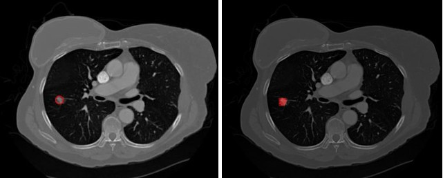

FusionViTNet

Developed a hybrid CNN and Vision Transformer model for accurate carotid artery segmentation in ultrasound images.


Lung Nodule Segmentation
Deep learning-based automatic lung nodule detection system to aid radiologists in early diagnosis.
GitHub RepoDiabetic Foot Ulcer Monitoring


Designed and developed a thermal and pressure sensing sock to monitor diabetic foot ulcers, connected to a mobile app.
GitHub Repo